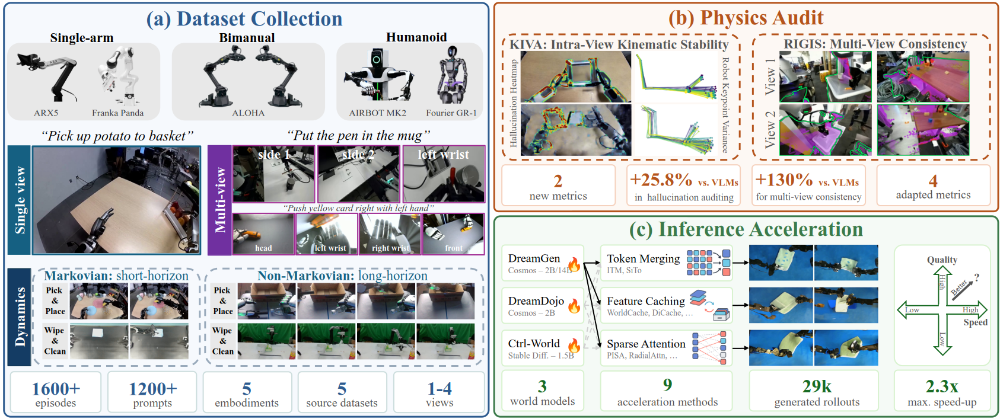
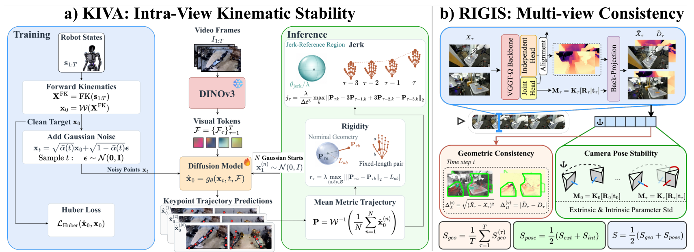
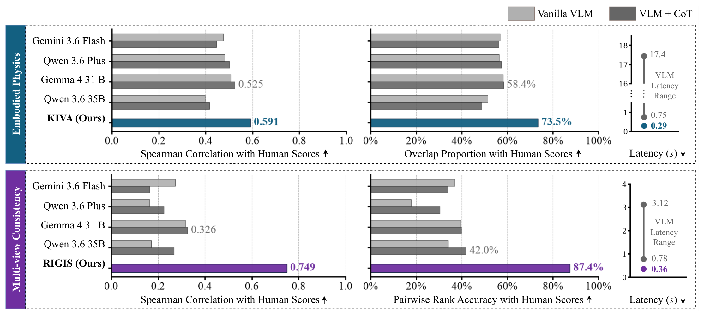
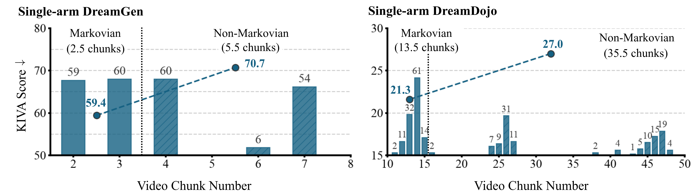
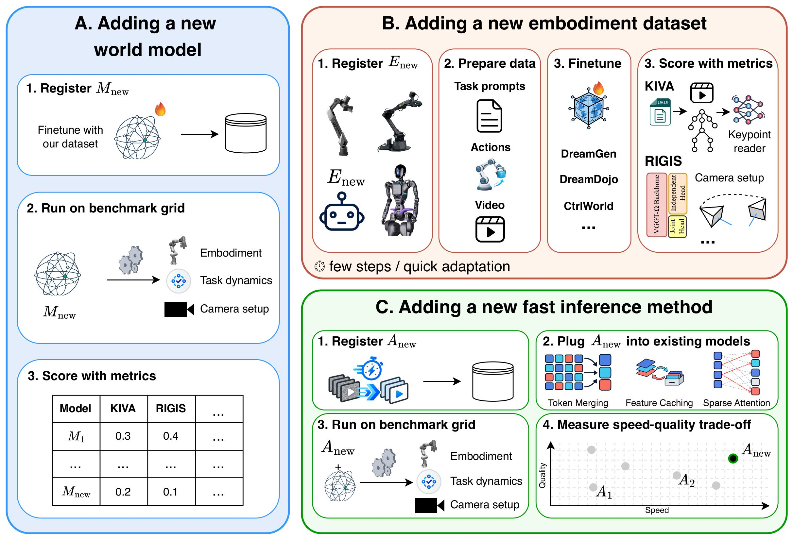

Physics checked with what the robot already knows
Robot video world models are usually scored as generic video generators, often by VLM judges that cannot check 3-D geometry or kinematics. RoboWorM instead checks them against the robot's known kinematic tree and its fixed camera rig.
- a
The benchmark holds 1,605 real episodes on single-arm, bimanual and humanoid robots with short and long-horizon tasks and one to four views.
- b
Without any VLM, KIVA checks kinematics within a view (+25.8% agreement with human hallucination labels over the best VLM) and RIGIS checks geometry across views (+130% Spearman correlation with humans).
- c
An audit of 9 acceleration methods on 3 world models and over 29,000 rollouts shows that faster videos can look right while breaking physics. KIVA and RIGIS find up to 2.3× speed-up with minimal quality loss.

The RoboWorM benchmark
Five public corpora (DROID, RoboChallenge, the AIST bimanual corpus, RoboCOIN and NVIDIA GR00T Teleop GR1) give six configurations over five robots and three morphologies, each with short Markovian and long non-Markovian tasks and up to four synchronized cameras.
509 instructions, 14 manipulation primitives
Horizon and footage
- 9.7 h
- of real video
- 1,605
- episodes
- ≤ 142 s
- per episode
- 15–30
- source FPS
§3.2Three world models, three ways of rolling out
§3.3Nine acceleration methods in three families
Deployment-aware physics auditing with KIVA and RIGIS
KIVA checks the robot's kinematics inside each view. RIGIS checks that the views of a multi-camera rollout agree on one scene and one fixed rig.

KIVA: Kinematic Invariant Violation Assessment
A diffusion reader trained on real teleoperation reads 3-D robot keypoints from the pixels. Links cannot change length and joints cannot teleport, so KIVA measures both and compares them with real footage.
RIGIS: Robotic Inter-view Geometry & Intrinsic-Extrinsic Stability
Cameras on a fixed rig see one scene and do not move. RIGIS lifts each view into 3-D with VGGT-Ω and checks whether the views agree where they overlap and whether the estimated cameras stay put.
Experiments
Yes. KIVA raises agreement with human hallucination labels from 58.4% to 73.5%, and RIGIS raises the Spearman correlation with human preferences from 0.326 to 0.749.
VLM verdicts are unstable across runs, with per-video score standard deviations reaching 0.591. KIVA and RIGIS are deterministic and take 0.29s and 0.36s for 1 video second compared to 0.75s to 17.4s for VLMs.

RIGIS and KIVA align with human judgment where VLMs fail
KIVA uses kinematic constraints to evaluate physical plausibility beyond surface metrics (MS; MAS). RIGIS evaluates holistic multi-view consistency where conventional feature matching and SLAM (MVC; SLAM RPE) fail under large viewpoints (Figure 6a).
- Longer rollouts show stronger degradation. KIVA degrades mainly in the two deepest configura- tions of single-arm DreamGen and DreamDojo, where non-Markovian rollouts have higher rollout depth (i.e., more frames).
- Architecture and cross-view consistency. Ctrl-World outperforms DreamGen in RIGIS across all multi-view settings.
(a) Multi-view tracks · RIGIS ↑
(b) Single-view tracks · KIVA ↓
Table 2. Dense world-model results show a setting-dependent performance gap: Ctrl-World dominates multi-view, while DreamDojo leads single-view tracks.

Caching offers the most robust acceleration, achieving 1.7× speedup with minimal quality loss and winning all 12 configurations. WorldCache is its strongest, at 1.8× mean and benchmark-best 2.3× on DreamGen humanoid and single-arm multi-view.
Figures 5, C2 and C3. One point per method and world model. Thin dashed lines are each model's dense score; the labelled line is real video.
Limitations
How to use RoboWorM?
RoboWorM allows researchers to scale and use the benchmark across three distinct paths, scoring rollouts with KIVA and RIGIS:
- Path A (New Video World Model): Fine-tunes a new model on the released corpus, evaluates it across the standard grid, and adds a new table row.
- Path B (New Embodiment or Dataset): Integrates new data by formatting native representations, fine-tuning across three backbones, performing physical audits, and adding a new table column (requires training).
- Path C (New Acceleration Method): Applies intervention techniques directly to existing checkpoints without retraining, evaluating speed versus quality on the standard grid.
Check out Extending RoboWorM to contribute new world models, embodiments, or acceleration methods.

BibTeX
@misc{roboworm2027,
title = {RoboWorM: Evaluating Movement Realism, Consistency and
Acceleration Affects in Embodied Video World Models},
author = {Anonymous},
year = {2027}
}